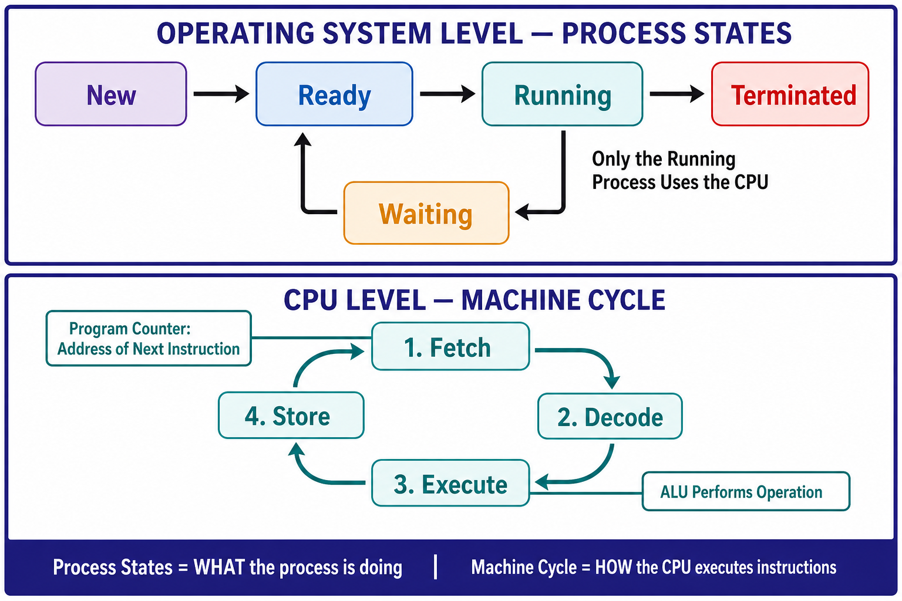

📘 OS Notes New
Computer Hub
← All sections
Practice Hub
/
Computer
/
OS Notes New
/ 2.G
SECTION 2 · SUBTOPIC 2.G
Process States and the Machine Cycle
How OS-managed process states connect to CPU Fetch, Decode, Execute, and Store.

Generated two-level overview connecting the Running process to the Fetch–Decode–Execute–Store machine cycle.
← Section overview
Back to top ↑